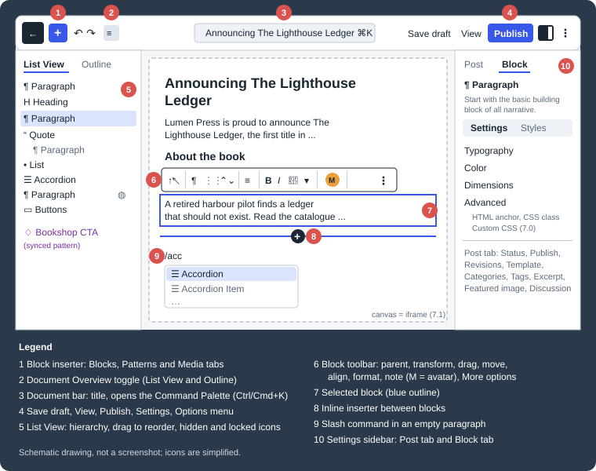

Block Editor for Authors
|
This content was generated with the assistance of AI and should be verified against the official documentation before being relied on in production. |
This page was written against WordPress 7.1.3 (released 2026-10-06; 7.1.4, a security release of 2026-10-28, is the version to run in production), WP-CLI 2.12.0 and the editor packages bundled with WordPress 7.1, and checked on 2026-10-28. WordPress 7.1 requires PHP 7.4 at minimum, and PHP 8.3 or newer is recommended. The Gutenberg plugin (24.2.0 at the time of writing) ships editor features before they reach a WordPress release; everything described here is in WordPress 7.1 itself unless stated otherwise. WordPress 7.2 is in beta and planned for 2026-12-08. Every command on this page was run against the Docker Compose sandbox given below, and every output block is real output.
The page is for the people who write: authors, editors and contributors of Lumen Press, the fictitious independent publisher used throughout this sub-section. It covers the post editor (the screen opened by Posts > Add Post or Pages > Add Page). The Site Editor, where templates and global styles are edited, is covered in Site Editor and Global Styles; post statuses, scheduling and the trash are in Posts and Pages; the admin screens around the editor are in Dashboard and Admin Screens.
What the block editor is
The block editor (also called the WordPress editor, or Gutenberg after the project that builds it) became the default editor in WordPress 5.0 in December 2018, replacing the TinyMCE-based "classic" editor. Every piece of content is a block: a paragraph, a heading, an image, a list, a group of other blocks. Each block has its own toolbar, its own settings in a sidebar, and its own markup.
Internally the editor is a JavaScript (React) application that runs in the browser. It loads the post through the
REST API, keeps the blocks in memory as a tree of objects (name, attributes, inner blocks), and saves them back as
HTML with special HTML comments, called block delimiters, around each block. That text is stored in the
post_content column of the wp_posts table (see Database Schema). When the
editor opens the post again it parses the delimiters back into blocks; when a visitor views the post, PHP parses the
same text and renders each block. Plugins and themes add their own blocks to the same system.
Since WordPress 7.1 the editing canvas (the area where the blocks are shown) always runs inside an iframe, as the
Site Editor already did. The theme’s editor styles apply only to the content, not to the admin interface around it.
In 7.0 the iframe was used only when every block in the post used block API version 3; in 7.1 it is enforced for all
posts, including those with legacy meta boxes. For authors this mostly means the canvas looks more like the front end;
for developers it means plugin code that reaches into the admin page’s document from inside the canvas breaks (see
block.json and Registration).
Real-time collaborative editing (several people typing in the same post at once) did not ship. It was removed from 7.0 shortly before release, was not part of 7.1, and has no release scheduled. When two people open the same post, WordPress still uses post locking: the second person is told who is editing and can go back, preview or take over. The collaboration features that do exist are Notes (6.9, extended in 7.1) and revisions, both covered below.
A sandbox for the examples
The examples on this page create content with WP-CLI against a disposable site. The following Compose file starts
WordPress 7.1.3 with MariaDB 11.8 and adds a WP-CLI 2.12.0 service that shares the WordPress files. The content
directory next to it holds the block markup files used below and is mounted read-only into the WP-CLI container.
# compose.yaml - Lumen Press authoring sandbox: WordPress 7.1.3, MariaDB 11.8 and WP-CLI 2.12.0.
services:
db:
image: mariadb:11.8
environment:
MARIADB_DATABASE: lumen_press
MARIADB_USER: lumen
MARIADB_PASSWORD: ${LP_DB_PASSWORD:?set LP_DB_PASSWORD}
MARIADB_RANDOM_ROOT_PASSWORD: "1"
volumes:
- db-data:/var/lib/mysql
healthcheck:
test: ["CMD", "healthcheck.sh", "--connect", "--innodb_initialized"]
interval: 5s
retries: 20
wordpress:
image: wordpress:7.1.3-php8.4-apache
depends_on:
db:
condition: service_healthy
environment: &wp-env
WORDPRESS_DB_HOST: db
WORDPRESS_DB_NAME: lumen_press
WORDPRESS_DB_USER: lumen
WORDPRESS_DB_PASSWORD: ${LP_DB_PASSWORD:?set LP_DB_PASSWORD}
WORDPRESS_TABLE_PREFIX: lp_
ports:
- "${LP_HTTP_PORT:-8080}:80"
volumes:
- wp-data:/var/www/html
cli:
image: wordpress:cli-2.12.0-php8.4
profiles: ["tools"]
user: "33:33" # the www-data user of the Apache image, so both containers can write the files
depends_on:
- wordpress
environment:
<<: *wp-env
WP_CLI_CACHE_DIR: /tmp/wp-cli-cache
working_dir: /var/www/html
volumes:
- wp-data:/var/www/html
- ./content:/content:ro
volumes:
db-data:
wp-data:Start the site, install it and create two of the Lumen Press users: an editor and an author. The wp alias below is
only a shorthand for the long docker compose run command; the database password comes from the environment and is
never written into a file.
export LP_DB_PASSWORD='<choose-a-local-password>'
docker compose up -d --wait
alias wp='docker compose run --rm -T cli wp --url=http://localhost:8080'
wp core install --url=http://localhost:8080 --title="Lumen Press" \
--admin_user=lp_admin --admin_email=admin@lumenpress.example --skip-email
wp user create maria.editor maria@lumenpress.example --role=editor --display_name="Maria Editor" --porcelain
wp user create tom.author tom@lumenpress.example --role=author --display_name="Tom Author" --porcelain
wp term create category News --porcelainSource: WP-CLI Commands: wp core install
If wp reports that wp-config.php is missing, wait a few seconds: the WordPress container copies its files into the
volume on first start. wp core install prints a generated administrator password when --admin_password is omitted;
store it in a password manager. The two wp user create commands print the new user IDs, 2 for maria.editor and 3
for tom.author, which the later commands use. docker compose --profile tools down -v removes everything, volumes
included.
The editor layout
The figure is a schematic of the post editor while Tom, an author, writes the announcement of a new Lumen Noir title. It is a simplified drawing, not a screenshot; the real icons differ.

The editor opens in fullscreen mode (the admin menu is hidden) by default since WordPress 5.4. Its three permanent areas are the top toolbar, the content canvas and the settings sidebar; the Document Overview panel opens on demand on the left.
The top toolbar
| Control | What it does |
|---|---|
Back button |
Leaves the editor for the Posts or Pages list; unsaved changes trigger a confirmation. |
Block inserter (+) |
Opens the Blocks, Patterns and Media tabs. Media lists recent uploads, the Media Library and free Openverse images and audio (copied into the Media Library when inserted). |
Undo and Redo |
Step through the editing history of this session. |
Document Overview |
Toggles the left panel with the List View and Outline tabs. |
Document bar |
Shows the title; clicking it, or Ctrl+K (Cmd+K), opens the Command Palette, which runs commands by name. Since 6.9 the palette works across the whole admin. |
Save draft, View |
Save without publishing (the label turns into Saved); preview the post at desktop, tablet or mobile width. |
Publish |
Publishes, after the optional pre-publish checklist (visibility, publish date, categories, tags). Contributors see Submit for Review instead, which sets the status to |
Settings, Options |
Toggle the settings sidebar; open the menu with view options, the Code editor, tools and Preferences. |
Document Overview: List View and Outline
List View shows every block of the post as a tree, which is often the only practical way to reach a block nested inside groups, columns or accordions. A click selects the block in the canvas; Shift+click selects a range; blocks can be dragged to a new position inside the tree. Each entry has a three-dot menu with Copy, Cut, Duplicate, Add before, Add after, Add note, Copy styles, Paste styles, Group, Ungroup, Lock, Unlock, Rename, Hide, Create pattern and Delete. Entries show a padlock for locked blocks, an eye icon for hidden blocks, the HTML anchor when one is set, thumbnails for Image and Gallery blocks, and a purple colour for synced patterns.
Outline shows the number of characters and words, an estimated time to read, and the heading structure. Headings that skip a level are marked "(Incorrect heading level)" and several H1 headings are flagged too, which matters for screen-reader users navigating by headings (see Web Accessibility).
The block toolbar and the More options menu
Selecting a block shows its toolbar above it (or pinned under the top toolbar when Top toolbar is on). From left to right it usually holds the parent selector (selects the containing block); the block type button, which transforms the block into another type (a paragraph into a heading, a list or a quote) without losing content or styles; the drag handle and the move up/move down arrows; alignment and justification; block-specific controls (bold, italic, link and more formats for text; replace, crop and duotone for images); the avatar of the note author when the block has a note; and More options (three vertical dots), with Copy, Duplicate, Add before, Add after, Copy styles, Paste styles, Group, Lock, Rename, Hide, Add note, Create pattern, Edit as HTML and Delete, depending on the block.
Copy styles and Paste styles (or Ctrl+Alt+V) copy the appearance settings of a block (colours, typography, spacing, border) to another block of the same type. Lock prevents a block from being moved, removed, or both; it guards against accidents, not against people, because anyone who can edit the post can unlock it. Rename gives a block a custom name that appears in List View only.
The settings sidebar
-
Post (or Page) tab: the document settings, such as status and visibility, publish date, slug, template, author, Revisions, categories, tags, excerpt, featured image and discussion. Preferences > General > Document settings hides panels a team does not use.
-
Block tab: the settings of the selected block. Many blocks split it into a Settings sub-tab (behaviour) and a Styles sub-tab (style variations, colour, typography, dimensions, border and shadow). Advanced holds the HTML anchor, additional CSS classes and, since 7.0, custom CSS for that one block instance. Which design controls appear depends on the theme’s
theme.json(see theme.json Settings). Each panel’s three-dot menu reveals optional controls and offers Reset and Reset all.
View options and preferences
The Options menu holds per-user settings: Top toolbar, Distraction free (hides sidebars, inserter options and
the block toolbar), Spotlight mode (greys out every block but the current one), Fullscreen mode, and the switch
between the Visual editor and the Code editor. The Code editor shows the post as serialized block markup, the
text stored in post_content, and is where the markup of the next sections can be pasted. Preferences has four
tabs: General (always open List View, block breadcrumbs, right-click menus, starter patterns, document settings
panels, the pre-publish checklist), Appearance (top toolbar, distraction free, spotlight, use theme styles),
Accessibility (keep the text cursor inside the block, show button text labels instead of icons) and Blocks (show
most used blocks, hide block types from the inserter). Hiding a block type there only removes it from that user’s
inserter; it does not disable the block.
Adding blocks
There are several ways to add a block, and authors who write long texts usually settle on the keyboard ones:
-
the block inserter (+) in the top toolbar, with search, categories (Text, Media, Design, Widgets, Theme, Embeds, plus categories added by plugins) and a preview on hover
-
the + icon at the right of an empty paragraph, which opens a short list of frequent blocks and a Browse all button
-
the inline inserter that appears as a blue line with a + when the pointer hovers between two blocks
-
the slash command: press Enter to start a new paragraph, type
/and the start of a block name (/head,/image,/acc), then Enter. The suggestions are filtered as you type. -
Add before and Add after in the More options menu, or Ctrl+Alt+T and Ctrl+Alt+Y
-
pasting: content pasted from a word processor or a web page is converted into blocks (headings, lists, tables, images by URL); a URL pasted alone on an empty line becomes an embed when the provider supports it (see Embeds and oEmbed)
Two text shortcuts work inside any rich-text block: typing [[ opens a search of existing posts and pages to link
to, and selecting text and pressing the backtick key turns it into inline code.
The block directory extends the inserter search: when no installed block matches, the inserter searches the
single-block plugins on WordPress.org and offers to install one. This is only shown to users with the
install_plugins capability (administrators on a single site), and it installs and activates a whole plugin, so the
plugin vetting rules of Choosing and Managing Plugins
and Themes apply. Sites that set DISALLOW_FILE_MODS do not show it.
Keyboard shortcuts
Shift+Alt+H (Ctrl+Option+H on macOS) opens the list of shortcuts inside the editor. The most useful ones:
| Action | Windows and Linux | macOS |
|---|---|---|
Global |
||
Show the keyboard shortcuts |
Shift+Alt+H |
Ctrl+Option+H |
Open the Command Palette |
Ctrl+K (outside a text selection) |
Cmd+K |
Save |
Ctrl+S |
Cmd+S |
Undo / Redo |
Ctrl+Z / Ctrl+Shift+Z (or Ctrl+Y) |
Cmd+Z / Shift+Cmd+Z |
Switch between Visual and Code editor |
Ctrl+Shift+Alt+M |
Shift+Option+Cmd+M |
Toggle fullscreen mode |
Ctrl+Shift+Alt+F |
Shift+Option+Cmd+F |
Open List View |
Shift+Alt+O |
Ctrl+Option+O |
Show or hide the settings sidebar |
Ctrl+Shift+, |
Shift+Cmd+, |
Move focus to the nearest toolbar |
Alt+F10 |
Option+F10 |
Toggle zoom-out view (when the template is shown) |
Ctrl+Shift+0 |
Shift+Cmd+0 |
Selection |
||
Select all text in the block, then all blocks |
Ctrl+A |
Cmd+A |
Clear the selection / unselect blocks |
Esc / Esc twice |
Esc / Esc twice |
Blocks |
||
Duplicate the selected blocks |
Ctrl+Shift+D |
Shift+Cmd+D |
Remove the selected blocks |
Shift+Alt+Z |
Ctrl+Option+Z |
Insert a block before / after |
Ctrl+Alt+T / Ctrl+Alt+Y |
Option+Cmd+T / Option+Cmd+Y |
Move the selected blocks up / down |
Ctrl+Shift+Alt+T / Ctrl+Shift+Alt+Y |
Shift+Option+Cmd+T / Shift+Option+Cmd+Y |
Group the selected blocks |
Ctrl+G |
Cmd+G |
Hide the selected block |
Ctrl+Shift+H |
Shift+Cmd+H |
Paste copied styles |
Ctrl+Alt+V |
Cmd+Option+V |
Text |
||
Bold / Italic / Underline |
Ctrl+B / Ctrl+I / Ctrl+U |
Cmd+B / Cmd+I / Cmd+U |
Turn the selection into a link / remove the link |
Ctrl+K / Ctrl+Shift+K |
Cmd+K / Shift+Cmd+K |
Inline code |
Ctrl+Alt+X |
Cmd+Option+X |
Turn a paragraph into a heading of level 1 to 6 / a heading into a paragraph |
Shift+Alt+1 to 6 / Shift+Alt+0 |
Ctrl+Option+1 to 6 / Ctrl+Option+0 |
List View |
||
Collapse all items except the selected one |
Alt+L |
Option+L |
Ctrl+K has two meanings: with text selected inside a block it creates a link; elsewhere it opens the Command Palette. Some shortcuts collide with browser or desktop shortcuts (Ctrl+Alt+T opens a terminal on several Linux desktops); the list inside the editor is authoritative for the installed version.
How blocks are saved: serialized block markup
The Code editor shows what the editor actually stores. Each block is wrapped in an opening and a closing delimiter,
<!-- wp:paragraph --> and <!-- /wp:paragraph -->. The block name follows wp: (core blocks drop the core/
prefix; a plugin block is written with its namespace, as in <!-- wp:lumen/book-card -->). Attributes that are not
derived from the HTML are stored as a JSON object inside the opening delimiter. Blocks without saved HTML, such as
dynamic blocks rendered by PHP, use a self-closing delimiter like <!-- wp:post-time-to-read /-->. Nested blocks
appear inside their parent’s markup.
The following file, content/lighthouse-ledger.html in the sandbox, is the announcement post of The Lighthouse
Ledger, the first title of the Lumen Noir imprint. It contains text blocks, a quote with a nested paragraph, a list,
an accordion with a frequently asked question, a paragraph hidden on mobile and a button:
<!-- wp:paragraph -->
<p>Lumen Press is proud to announce <strong>The Lighthouse Ledger</strong>, the first title of the new Lumen Noir imprint, on sale from 14 November.</p>
<!-- /wp:paragraph -->
<!-- wp:heading -->
<h2 class="wp-block-heading">About the book</h2>
<!-- /wp:heading -->
<!-- wp:paragraph -->
<p>A retired harbour pilot finds a ledger that should not exist. Read the <a href="/books/the-lighthouse-ledger/">catalogue entry</a> for the full synopsis.</p>
<!-- /wp:paragraph -->
<!-- wp:quote -->
<blockquote class="wp-block-quote"><!-- wp:paragraph -->
<p>Every page turns like a tide.</p>
<!-- /wp:paragraph --><cite>Early reader review</cite></blockquote>
<!-- /wp:quote -->
<!-- wp:list -->
<ul class="wp-block-list"><!-- wp:list-item -->
<li>Hardback, 312 pages</li>
<!-- /wp:list-item -->
<!-- wp:list-item -->
<li>ISBN 978-1-23456-789-7</li>
<!-- /wp:list-item --></ul>
<!-- /wp:list -->
<!-- wp:accordion -->
<div role="group" class="wp-block-accordion"><!-- wp:accordion-item -->
<div class="wp-block-accordion-item"><!-- wp:accordion-heading -->
<h3 class="wp-block-accordion-heading has-icon has-icon-right"><button type="button" class="wp-block-accordion-heading__toggle"><span class="wp-block-accordion-heading__toggle-title">Where can I buy it?</span><span class="wp-block-accordion-heading__toggle-icon" aria-hidden="true">+</span></button></h3>
<!-- /wp:accordion-heading -->
<!-- wp:accordion-panel -->
<div role="region" class="wp-block-accordion-panel"><!-- wp:paragraph -->
<p>At any independent bookshop, or directly from the Lumen Press shop.</p>
<!-- /wp:paragraph --></div>
<!-- /wp:accordion-panel --></div>
<!-- /wp:accordion-item --></div>
<!-- /wp:accordion -->
<!-- wp:paragraph {"metadata":{"blockVisibility":{"viewport":{"mobile":false}}}} -->
<p>Scan the QR code on the back cover to hear the author read chapter one.</p>
<!-- /wp:paragraph -->
<!-- wp:buttons -->
<div class="wp-block-buttons"><!-- wp:button -->
<div class="wp-block-button"><a class="wp-block-button__link wp-element-button" href="/books/the-lighthouse-ledger/">Pre-order now</a></div>
<!-- /wp:button --></div>
<!-- /wp:buttons -->The markup was checked with the block parser and validator of @wordpress/blocks 15.27.0 and
@wordpress/block-library 10.2.0 from npm (WordPress 7.1.3 itself bundles @wordpress/blocks 15.24.0, from its
Gutenberg build): all 16 blocks parse as valid.
That validation is what decides whether the editor accepts hand-written or migrated markup. For a static block
(one whose HTML is produced by a JavaScript save function), the editor regenerates the HTML from the parsed
attributes and compares it with what is stored. If they differ and no deprecated version of the block matches, the
block shows "Block contains unexpected or invalid content." with Attempt recovery, and the More options menu
offers Resolve Block, Convert to blocks or Keep as HTML. Changing classes or structure by hand, or copying
markup between WordPress versions, is the usual cause; dynamic blocks are not validated because their HTML is produced
on the server. The front end is not affected: PHP renders whatever is stored.
Content without delimiters, such as a post written in the classic editor, is opened as one Classic block (the
core/freeform block). Its More options menu has Convert to blocks, which splits it into paragraphs, headings and
lists.
Creating a post with blocks from WP-CLI
Because a post is just text with delimiters, any tool that writes post_content can create block content: an import
script, the REST API, or WP-CLI. wp post create takes the content from a file:
wp post create /content/lighthouse-ledger.html --post_title="Announcing The Lighthouse Ledger" \
--post_author=3 --post_category=News --post_status=draft --porcelain
wp post get 4 --fields=ID,post_title,post_status,post_author,post_type --format=yaml4
---
ID: 4
post_author: "3"
post_title: Announcing The Lighthouse Ledger
post_status: draft
post_type: postSource: WP-CLI Commands: wp post create
--post_author takes a user ID; a login name such as tom.author is silently stored as author 0. --post_category
accepts names or IDs of existing categories. The file is stored as it is: WP-CLI does not run the editor’s block
validation, so markup that is not what the blocks would save shows the validation error described above the first
time someone opens the post in the editor. Validating imported markup before a bulk import avoids that.
parse_blocks() is the PHP side of the same grammar. Listing the top-level blocks of the new post shows the names, the
JSON attributes from the delimiters and the number of nested blocks:
wp eval 'foreach ( parse_blocks( get_post( 4 )->post_content ) as $lp_block ) {
if ( $lp_block["blockName"] ) {
printf( "%-15s inner=%d attrs=%s\n", $lp_block["blockName"], count( $lp_block["innerBlocks"] ), wp_json_encode( $lp_block["attrs"] ) );
}
}'core/paragraph inner=0 attrs=[]
core/heading inner=0 attrs=[]
core/paragraph inner=0 attrs=[]
core/quote inner=1 attrs=[]
core/list inner=2 attrs=[]
core/accordion inner=1 attrs=[]
core/paragraph inner=0 attrs={"metadata":{"blockVisibility":{"viewport":{"mobile":false}}}}
core/buttons inner=1 attrs=[]Source: Code Reference: parse_blocks()
The blank lines between blocks are parsed as blocks with a null name (freeform whitespace), which is why the loop
skips entries without a blockName. serialize_blocks() turns the array back into markup, which is how the Notes
example below edits a block attribute.
Hiding blocks and per-viewport visibility
WordPress 6.9 added Hide to the block menu, and 7.0 extended it to individual screen sizes. Both are set from the More options menu, the List View menu, the Command Palette or Ctrl+Shift+H, which open the block visibility dialog:
-
Omit from published content removes the block from the page that visitors receive. It is stored as
"metadata":{"blockVisibility":false}, and PHP renders nothing for it. The block stays in the post and in the editor, marked with an eye icon in List View. -
Desktop, Tablet and Mobile hide the block only at those widths. The block is stored as
"metadata":{"blockVisibility":{"viewport":{"mobile":false}}}and is still in the HTML; a class and a CSS media query hide it visually.
The rendered Lumen Press post shows the difference. The paragraph hidden on mobile keeps its text and gets a class, and the block-support stylesheet adds the matching media query; a paragraph omitted from published content renders as an empty string:
wp eval 'echo apply_filters( "the_content", get_post( 4 )->post_content );' | grep "Scan the QR"
wp eval 'do_blocks( get_post( 4 )->post_content );
echo wp_style_engine_get_stylesheet_from_context( "block-supports", array( "prettify" => false ) ), PHP_EOL;'
wp eval 'var_dump( do_blocks( "<!-- wp:paragraph {\"metadata\":{\"blockVisibility\":false}} -->\n<p>Embargoed until launch day.</p>\n<!-- /wp:paragraph -->" ) );'<p class="wp-block-hidden-mobile wp-block-paragraph">Scan the QR code on the back cover to hear the author read chapter one.</p>
@media (width <= 480px){.wp-block-hidden-mobile{display:none !important;}}
string(0) ""The breakpoints come from the theme. With the default values they are mobile up to 480 px, tablet from 481 to 782 px
and desktop above 782 px; since 7.1 a block theme can change them with settings.viewport in theme.json, and the
same breakpoints drive the 7.1 responsive styles (see
theme.json Settings).
Viewport hiding is a layout tool, not a privacy tool. Hidden content is still sent to every visitor, is visible in the
page source and can be indexed by search engines; embargoed text, prices that must not leak or personal data must be
omitted (or kept in a draft), not hidden by viewport. Keeping separate "desktop" and "mobile" copies of the same text
also duplicates it for search engines; a responsive layout is usually the better answer. Blocks whose type declares
"visibility": false in its supports do not offer the control, but a block saved with blockVisibility: false is never
rendered, whatever its support says.
Reusable content: patterns
A pattern is a ready-made group of blocks inserted from the Patterns tab of the inserter. Authors meet three kinds:
-
Theme and core patterns, registered in code and copied into the post when inserted.
-
Unsynced patterns, created by users with Create pattern; inserting one copies its blocks, and later edits to the pattern do not change posts that already use it. Since 7.0 an inserted unsynced pattern opens in
contentOnlymode: its text and images are editable, its structure is locked until the user chooses to edit it. -
Synced patterns, also created with Create pattern but with Synced turned on. The post stores only a reference,
<!-- wp:block {"ref":6} /-->, so editing the pattern changes it everywhere. These were called reusable blocks until WordPress 6.3 renamed them; older books and tutorials that describe "reusable blocks" are describing synced patterns. Since 6.6 pattern overrides let selected blocks inside a synced pattern hold per-instance content.
User patterns are posts of type wp_block. Unsynced ones carry the meta key wp_pattern_sync_status with the value
unsynced; synced ones have no such key. The Lumen Press "buy at your local bookshop" message, saved as content/bookshop-cta.html, as both
kinds:
<!-- wp:paragraph -->
<p>Prefer paper? Every Lumen Press title can be ordered from your local independent bookshop.</p>
<!-- /wp:paragraph -->wp post create /content/bookshop-cta.html --post_type=wp_block \
--post_title="Bookshop call to action" --post_status=publish --porcelain
wp post create /content/bookshop-cta.html --post_type=wp_block \
--post_title="Bookshop call to action (unsynced)" --post_status=publish \
--meta_input='{"wp_pattern_sync_status":"unsynced"}' --porcelain
wp post meta list 7 --format=csv
wp eval 'echo do_blocks( "<!-- wp:block {\"ref\":6} /-->" );'6
7
post_id,meta_key,meta_value
7,wp_pattern_sync_status,unsynced
<p class="wp-block-paragraph">Prefer paper? Every Lumen Press title can be ordered from your local independent bookshop.</p>Creating, categorising, exporting and overriding patterns is covered in Patterns for Site Builders; registering patterns in a theme is covered in Theme Patterns.
Notes
Notes, added in WordPress 6.9, let people who can edit a post leave feedback on it without changing the content. WordPress 7.1 extended them considerably. Notes never appear on the front end.
| Feature | How it works |
|---|---|
Note on a block (6.9) |
Select the block, then More options > Add note. The block shows the note author’s avatar in its toolbar. |
Replies, resolve, reopen (6.9) |
Replies are threaded. The check mark resolves a note and hides it from the active view; the Notes view in the top toolbar lists all notes, resolved ones below a Resolved divider, where Reopen and reply reopens one. A note’s own menu edits or deletes it. |
Several threads per block (7.1) |
Add note on a block that already has one starts a new, independent thread. |
Inline notes (7.1) |
Select a span of text and use the note button of the rich-text toolbar. The highlight follows that text as the paragraph is edited and is stripped from the published output. |
Rich text and mentions (7.1) |
Bold, italic, code and links are allowed. Typing |
Email notifications |
The post author is emailed when someone else adds a note. Settings > Discussion > Email me whenever > Anyone posts a note (option |
Orphaned notes |
If the block of a note is deleted, the note is kept and grouped with the active notes. |
Notes follow the post’s edit permission: administrators and editors can see and add notes on all posts, authors and contributors only on their own posts, subscribers not at all. They are available in the post and page editors (and in custom post types that enable them), but not in the Site Editor for templates and template parts. There is no "notes assigned to me" view. Before WordPress 7.1.4 (a security release of 2026-10-28), privileged users who could not edit a post could still read the notes attached to it; 7.1.4 enforces the rule above, so a site where notes discuss unpublished material should run it (WordPress News: WordPress 7.1.4).
Internally a note is a comment with comment_type note. An open note has comment_approved 0, a resolved one
1, and a deleted one goes to the trash. Replies are child comments. The block points to its top-level note with
noteId in its metadata attribute; the note does not store which block it belongs to. Notes are excluded from normal
comment queries, so code must ask for type note explicitly; the REST API exposes them at
/wp/v2/comments?post=<id>&type=note to users who can edit the post.
The following commands reproduce, with WP-CLI, what Maria (editor) and Tom (author) do in the editor: Maria leaves a note, Tom replies, the note is attached to the first paragraph, and Maria resolves it.
wp comment create --comment_post_ID=4 --comment_type=note --comment_approved=0 --user_id=2 \
--comment_author="Maria Editor" --comment_content="Please confirm the on-sale date with the distributor." --porcelain
wp comment create --comment_post_ID=4 --comment_type=note --comment_approved=0 --comment_parent=2 --user_id=3 \
--comment_author="Tom Author" --comment_content="Confirmed: 14 November." --porcelain
wp comment list --post_id=4 --format=count
wp comment list --post_id=4 --type=note --fields=comment_ID,comment_parent,comment_author,comment_approved --format=csv2
3
0
comment_ID,comment_parent,comment_author,comment_approved
3,2,"Tom Author",0
2,0,"Maria Editor",0The plain wp comment list count is 0: notes are not comments for any code that does not ask for them. The next
script attaches note 2 to the first block by editing the parsed block array and serializing it back, exactly the
attribute the editor writes:
<?php
/**
* content/attach-note.php - attach note 2 to the first block of post 4.
* Run with: wp eval-file /content/attach-note.php
*/
$lp_post = get_post( 4 );
$lp_blocks = parse_blocks( $lp_post->post_content );
$lp_blocks[0]['attrs']['metadata']['noteId'] = 2;
wp_update_post(
array(
'ID' => $lp_post->ID,
'post_content' => serialize_blocks( $lp_blocks ),
)
);
echo strtok( get_post( 4 )->post_content, "\n" ), PHP_EOL;wp eval-file /content/attach-note.php
wp comment approve 2
wp comment list --post_id=4 --type=note --fields=comment_ID,comment_parent,comment_approved --format=csv<!-- wp:paragraph {"metadata":{"noteId":2}} -->
Success: Approved comment 2.
comment_ID,comment_parent,comment_approved
3,2,0
2,0,1Approving the comment is what Resolve does. Here only the top-level note changes status; the reply stays at 0.
Notes are on for posts and pages. A custom post type such as the catalogue’s lp_book enables them with
'supports' => array( 'title', 'editor' => array( 'notes' => true ) ) in register_post_type(), the same value core
uses for posts; the type also needs show_in_rest, or it does not use the block editor at all. Because
add_post_type_support() replaces the editor sub-features instead of merging them, a plugin that adds Notes to a post
type registered elsewhere must merge the existing editor features first; the
Notes developer note shows both, and
Custom Post Types and Taxonomies covers registration.
The revisions timeline
Every save of a post creates a revision (a copy of the title, content and excerpt), and the editor keeps one autosave per user per post. The Revisions panel of the Post tab shows how many there are; clicking it opens the revisions screen.
WordPress 7.0 replaced the old side-by-side HTML diff with a visual revisions screen inside the editor:
-
a slider at the top moves through the revisions, and a list in the Revision panel jumps to one directly;
-
the canvas shows the post as it was, and the Show changes toggle highlights what changed in blocks: solid green for added blocks, red forward-slanting stripes for removed ones, yellow backward-slanting stripes for modified ones;
-
coloured markers next to the scrollbar show where changes are and how large; clicking one scrolls there;
-
autosaves are labelled Autosave;
-
Restore brings the selected revision back as the current content; the state before the restore stays in the list, so a restore can be undone.
The classic screen is still available through Open classic revisions screen; it is the one with Compare any two
revisions. Revisions are stored as wp_posts rows of type revision, children of the post, named
<post-id>-revision-v1; the Lumen Press draft above has one, 4-revision-v1, created when the note was attached.
The limit (WP_POST_REVISIONS, the wp_revisions_to_keep filter) and autosave timing are covered in
Posts and Pages. Revisions record the title, content and excerpt; terms are not
revisioned, and post meta only when it is registered with revisions_enabled (6.4 and later), so a restore does not
bring back an earlier category or, usually, an earlier featured image.
A tour of the core blocks
WordPress 7.1 registers 116 block types. Many are only for templates (theme blocks) or are children of other blocks; the inserter groups the rest into Text, Media, Design, Widgets, Theme and Embeds. The blocks an author uses most, and the ones added recently:
| Block | Name in markup | Since | Notes |
|---|---|---|---|
Paragraph, Heading, List, Quote, Pullquote, Table, Code, Preformatted |
|
5.0 |
The text blocks. |
Poetry (formerly Verse) |
|
5.0 |
Renamed to Poetry in 7.0; the markup name is unchanged. |
Image, Gallery, Audio, Video, File, Cover, Media & Text |
|
5.0 |
The 7.1 media editor opens from the Image block’s Crop button; see Media Library. |
Group, Row, Stack, Grid, Columns |
|
5.0, 5.3 |
Layout containers. |
Buttons, Separator, Spacer, More, Page Break |
|
5.0 |
More and Page Break split a post into a teaser and pages. |
Details, Footnotes |
|
6.3 |
A native disclosure widget; footnotes added with the Footnote text format and stored in post meta. |
Accordion |
|
6.9 |
Collapsible sections (Interactivity API), with heading level, icon position and auto-close options. |
Math |
|
6.9 |
A LaTeX formula stored as MathML; inline formulas are a format in any rich-text field. |
Time to Read (and Word Count) |
|
6.9 |
Dynamic; reading time at 189 words per minute by default, or the word count. Usually placed in the single-post template. |
Terms Query, Comments Count, Comments Link |
|
6.9 |
Theme blocks for templates. |
Icon |
|
7.0 |
An SVG icon from the icon library; 7.1 lets plugins register icon collections. |
Breadcrumbs |
|
7.0 |
Dynamic; the page’s position in the site hierarchy, usually in a header template part. |
Tabs |
|
7.1 |
Tabbed panels, interactive on the front end through the Interactivity API. |
Playlist |
|
7.1 |
Audio tracks with artwork, a track list and an optional waveform. |
Classic |
|
5.0 |
TinyMCE inside one block. A 7.1 proposal to hide it from the inserter was reverted. |
Custom HTML, Shortcode |
|
5.0 |
Raw HTML (filtered for users without |
Embed and its provider variations |
|
5.0 |
See Embeds and oEmbed. |
Several blocks lost the word "Post" from their titles in 6.9 (Title, Excerpt, Featured Image, Author Name, Tags); the
markup names, such as post-title, did not change. The old Post Author block was deprecated in 7.0: it is hidden
from the inserter but existing instances still render. Plugins add their own blocks next to these; the Lumen Press
catalogue blocks (lumen/book-card, lumen/latest-books, lumen/wishlist) are built in the Block Development pages
starting at Block Development Environment.
The second Lumen Press post uses two of the newer blocks, Tabs with the synopsis and reviews and a Math formula with the
reading-time estimate used by Time to Read, plus an embed of another WordPress site. It is saved as content/tour.html.
<!-- wp:tabs -->
<div class="wp-block-tabs"><!-- wp:tab-list -->
<div role="tablist" class="wp-block-tab-list"><button type="button" role="tab">Synopsis</button><button type="button" role="tab">Reviews</button></div>
<!-- /wp:tab-list -->
<!-- wp:tab-panels -->
<div class="wp-block-tab-panels"><!-- wp:tab-panel {"label":"Synopsis"} -->
<section role="tabpanel" tabindex="0" class="wp-block-tab-panel"><!-- wp:paragraph -->
<p>A retired harbour pilot finds a ledger that should not exist.</p>
<!-- /wp:paragraph --></section>
<!-- /wp:tab-panel -->
<!-- wp:tab-panel {"label":"Reviews"} -->
<section role="tabpanel" tabindex="0" class="wp-block-tab-panel"><!-- wp:paragraph -->
<p>"Every page turns like a tide."</p>
<!-- /wp:paragraph --></section>
<!-- /wp:tab-panel --></div>
<!-- /wp:tab-panels --></div>
<!-- /wp:tabs -->
<!-- wp:math {"latex":"t = \u005cfrac{w}{189}"} -->
<div class="wp-block-math"><math display="block"><semantics><mrow><mi>t</mi><mo>=</mo><mfrac><mi>w</mi><mn>189</mn></mfrac></mrow><annotation encoding="application/x-tex">t = \frac{w}{189}</annotation></semantics></math></div>
<!-- /wp:math -->
<!-- wp:embed {"url":"https://wordpress.org/news/2026/08/mary-lou/","type":"wp-embed","providerNameSlug":"wordpress-news"} -->
<figure class="wp-block-embed is-type-wp-embed is-provider-wordpress-news wp-block-embed-wordpress-news"><div class="wp-block-embed__wrapper">
https://wordpress.org/news/2026/08/mary-lou/
</div></figure>
<!-- /wp:embed -->The nine blocks of this file pass the same editor validation as the first post; the next section creates it as post
8. On the front end the Tabs block is rendered with Interactivity API directives (the tab buttons get
aria-controls and aria-selected bindings), the Math block outputs the stored MathML, and the embed becomes the
provider’s HTML, cached as shown in the next section.
In JSON attributes the editor escapes backslashes as \u005c, which is why the LaTeX attribute looks different from
the annotation in the HTML.
Embeds and oEmbed
Content from video, audio, social and document services is embedded, not uploaded: the post stores only the URL, and WordPress asks the service for the HTML to show. Authors either use the generic Embed block or a provider variation (YouTube, Vimeo, Spotify, SoundCloud, Bluesky, X, TikTok, WordPress and others), or simply paste the URL on its own empty line, which the editor turns into the right embed block. If the provider is not supported, or the URL is private, the block shows "Sorry, this content could not be embedded." with Try again and Convert to link.
The mechanism is oEmbed. Core keeps an allowlist of providers and their oEmbed endpoints; for those, any user who
can edit posts can embed. For other sites WordPress uses oEmbed discovery (the <link type="application/json+oembed"> tag in the page head) since 4.4, but filters the result heavily: only links,
blockquotes and sandboxed iframes survive. Users with the unfiltered_html capability (administrators and editors on a
single site) bypass part of that filtering, which is one more reason to give that capability only to trusted people.
Facebook and Instagram embeds stopped working in October 2020, when Meta closed its unauthenticated endpoint; core
removed those providers in 5.6, and those URLs now need a plugin with Meta app credentials.
The response is cached in post meta (_oembed_<hash> and _oembed_time_<hash>), so the provider is not called on
every page view. WP-CLI creates the tour post of the previous section, shows which endpoint its embed URL resolves to,
renders the post once and lists what was cached:
wp post create /content/tour.html --post_title="The Lighthouse Ledger: a closer look" \
--post_author=3 --post_status=publish --porcelain
wp embed provider match https://wordpress.org/news/2026/08/mary-lou/
wp eval '$GLOBALS["post"] = get_post( 8 ); apply_filters( "the_content", $GLOBALS["post"]->post_content );'
wp post meta list 8 --fields=meta_key --format=csv8
https://wordpress.org/news/wp-json/oembed/1.0/embed?url=https%3A%2F%2Fwordpress.org%2Fnews%2F2026%2F08%2Fmary-lou%2F
meta_key
_pingme
_encloseme
_oembed_8f0e86cfe9ca6183d6a19c7cf6982103
_oembed_time_8f0e86cfe9ca6183d6a19c7cf6982103Embedding another WordPress site, as here, works by discovery because every WordPress site is an oEmbed provider
(/wp-json/oembed/1.0/embed); the result is a sandboxed iframe with a blockquote fallback. Third-party embeds load
scripts and cookies from the provider when the page is viewed, which has privacy consequences covered in
SEO, Analytics and Privacy. Developers add providers with
wp_oembed_add_provider() (see
Advanced Administration Handbook: oEmbed).
The Classic Editor plugin as a legacy option
Sites that cannot move to blocks yet (custom meta boxes that were never ported, editorial habits, third-party plugins built for the old screen) can install the official Classic Editor plugin, maintained by WordPress contributors. It restores the TinyMCE editor and the old Edit Post screen. Its page promised full support "until 2024, or as long as is necessary"; version 1.7.0, tested up to WordPress 7.0.7, was the current one on 2026-10-28.
WordPress core itself has no setting to choose the editor. The choice appears under Settings > Writing only while the plugin is active: Default editor for all users (Classic or Block editor) and Allow users to switch editors. With switching allowed, each user picks a default on their profile, and the Posts list shows links to open a post in either editor. On Multisite the network administrator decides whether sites may change the setting.
wp plugin install classic-editor --version=1.7.0 --activate
wp option update classic-editor-replace block
wp option update classic-editor-allow-users allow
wp option list --search="classic-editor-*" --format=csvInstalling Classic Editor (1.7.0)
Downloading installation package from https://downloads.wordpress.org/plugin/classic-editor.1.7.0.zip...
Unpacking the package...
Installing the plugin...
Plugin installed successfully.
Activating 'classic-editor'...
Plugin 'classic-editor' activated.
Success: Installed 1 of 1 plugins.
Success: Updated 'classic-editor-replace' option.
Success: Updated 'classic-editor-allow-users' option.
option_name,option_value
classic-editor-allow-users,allow
classic-editor-replace,blockThe options are not created on activation: without classic-editor-replace the plugin defaults to the classic editor
for everyone. Setting it to block with switching allowed is a gentle transition: new users get the block editor, and
the classic editor stays available per post. Content written in the classic editor opens in the block editor as one
Classic block, which Convert to blocks turns into real blocks. Deactivating the plugin does not change any
content.
Developers can also turn the block editor off for one post type or one post with the
use_block_editor_for_post_type and use_block_editor_for_post filters; the plugin uses them. Staying on the classic
editor has costs: none of the features on this page (patterns, Notes, per-viewport visibility, new blocks, the visual
revisions screen) work there, and the Site Editor and block themes are built on blocks regardless.
Where older books differ
-
One of the older books presents the editor choice as a core Writing setting. Core’s Settings > Writing screen has no such option; the choice exists only while the Classic Editor plugin is active, as shown above.
-
Books written for WordPress 6.4 to 6.6 speak of reusable blocks. They were renamed synced patterns in 6.3, the menu item moved to Patterns, and since 6.6 synced patterns can have per-instance overrides.
-
Books written for WordPress 6.3 and 6.4 predate Notes (6.9), hiding blocks (6.9) and per-viewport visibility (7.0), the visual revisions screen (7.0), the always-iframed canvas (7.1) and the Accordion, Math, Time to Read, Icon, Breadcrumbs, Tabs and Playlist blocks; their screenshots of the toolbar and sidebar no longer match.
-
Articles written during the 7.0 beta that describe live co-editing describe a feature that was removed before release.
Common errors and pitfalls
-
"Block contains unexpected or invalid content." The stored HTML of a static block does not match what the block would save now: markup edited by hand, copied from another site or version, or altered by a plugin that filters
post_content. Try Attempt recovery first, compare in Resolve Block, and keep a revision before converting. -
HTML disappears after saving. Authors and contributors lack
unfiltered_html, so<script>,<iframe>and some attributes in Custom HTML blocks or the Code editor are removed by KSES. That is intentional; the content should go through an embed, a shortcode or a block provided by a plugin. -
A custom post type opens the classic screen. The post type was registered without
show_in_rest, so the block editor (which loads data through the REST API) cannot be used. -
The editor shows "The response is not a valid JSON response" or does not save. Something breaks the REST API: a security plugin or firewall blocking
/wp-json/, broken permalinks, or a PHP warning printed before the JSON. Site Health reports REST API and loopback problems; see Debugging, Site Health and Troubleshooting. -
A plugin’s editor panel looks broken since 7.1. It relies on admin CSS or the admin
documentinside the canvas, which is now always an iframe; update the plugin or report it. -
Notes are missing. WordPress before 6.9, no permission to edit the post, a template in the Site Editor, or a custom post type without
notessupport. -
An embed shows only a link. The provider is unknown and discovery failed, the content is private, or the server cannot reach the provider.
-
Content hidden on mobile still shows up in search results. Viewport hiding is CSS; use Omit from published content or keep the text in a draft.
Related pages
-
Posts and Pages: statuses, scheduling, excerpts, featured images, revisions limits
-
Media Library: uploads, image sizes and the 7.1 media editor
-
Patterns for Site Builders: synced and unsynced patterns, overrides, the Patterns screen
-
Users, Roles and Profiles: who may publish, edit others' posts and use
unfiltered_html -
Site Editor and Global Styles: templates and styles
-
WP-CLI: the commands used on this page and more